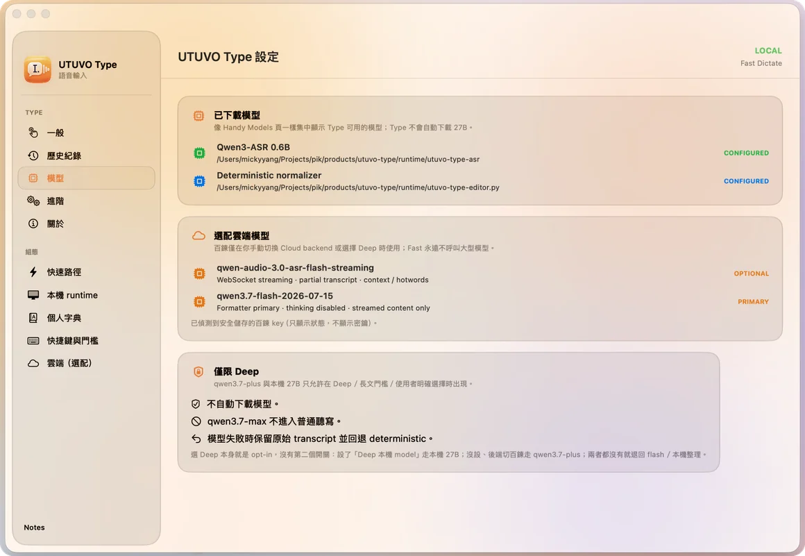
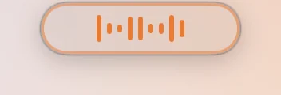
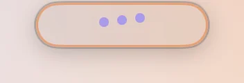
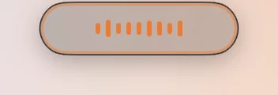
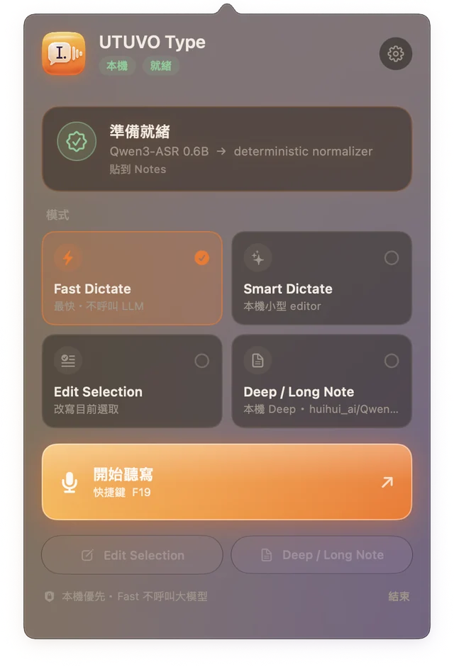

1
按快捷鍵
預設 ⌥Space，按住就是 push-to-talk。想換哪顆鍵都行。2
開口說
小膠囊告訴你正在錄。Esc 取消。你沒按之前不會錄任何東西。3
Fast 永遠不呼叫大模型。其他模式只做你要求的事，模型失敗就退回確定性路徑。
本機轉錄＋規則整理。即時、可預期、沒有 LLM。
本機小型 editor 順句子。還是在你的 Mac 上。
選一段文字，說你要改什麼。改寫結果直接取代選取。
長文筆記交給大一點的模型——本機 27B 或雲端，只在你選擇時。
大部分的修飾是規則，不是猜測。同樣的輸入永遠得到同樣的輸出。

預設安裝完全本機：Qwen3-ASR 0.6B 透過 MLX 在 Apple silicon 上跑。沒有帳號、沒有遙測、裝好之後不需要網路。

Swift、AppKit 與 SwiftUI。依 macOS 26 的設計語言：Liquid Glass 面板、浮動側欄、一顆小小的狀態膠囊；macOS 14、15 退回一般材質。




或直接從 Releases 下載已簽名、已公證的版本。從原始碼建置約一分鐘，外加一次性的 1.2 GB 模型下載。
git clone https://github.com/mickyyang-1407/utuvo-type.git && cd utuvo-type ./scripts/bootstrap-runtime.sh # Python venv＋Qwen3-ASR 模型，一次性 ./scripts/build-app.sh # dist/UTUVO Type.app
DMG 很小：語音模型不在裡面。設定 → 一般 → 安裝本機引擎會把 Qwen3-ASR 0.6B（約 1.2 GB，一次性）下載到你的 Application Support 資料夾。你沒按之前不會下載任何東西。